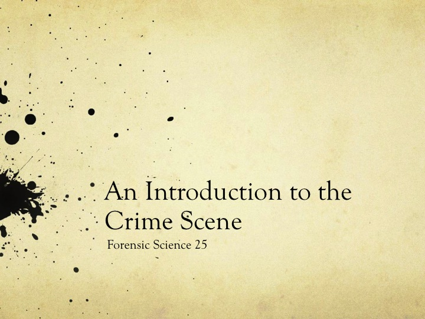
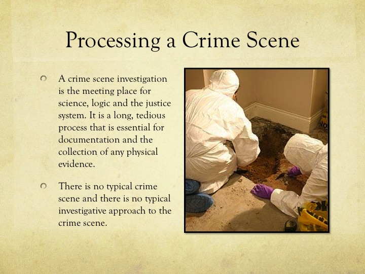
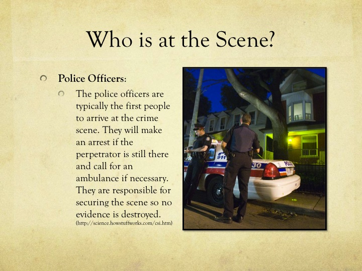
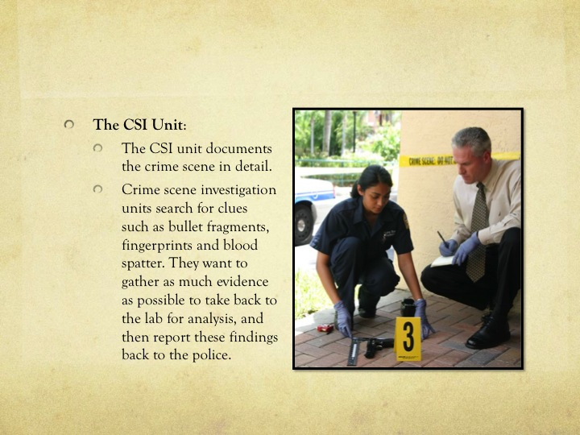
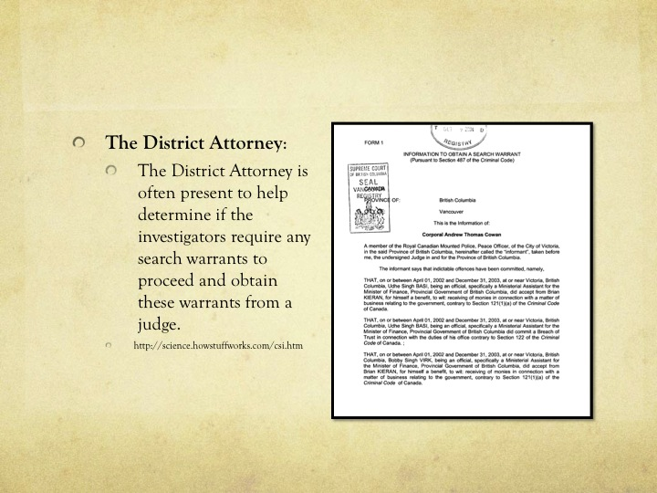
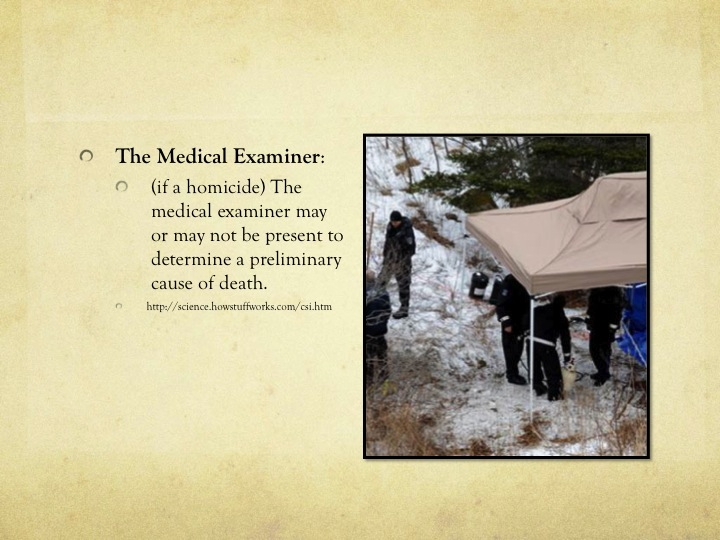
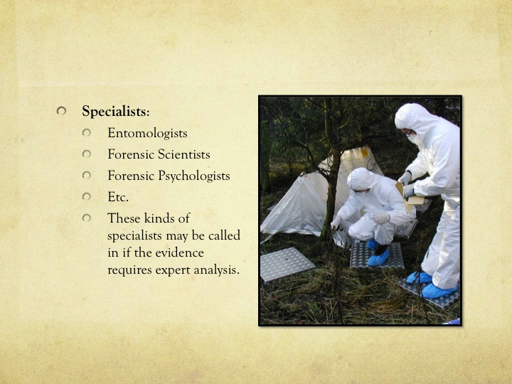
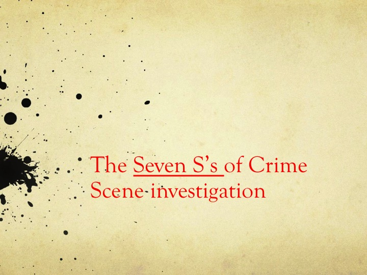
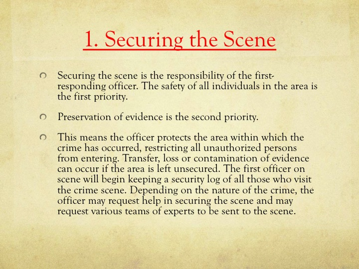
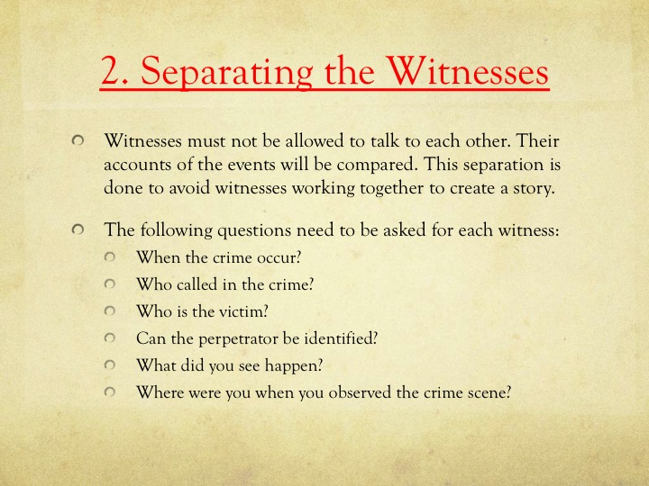
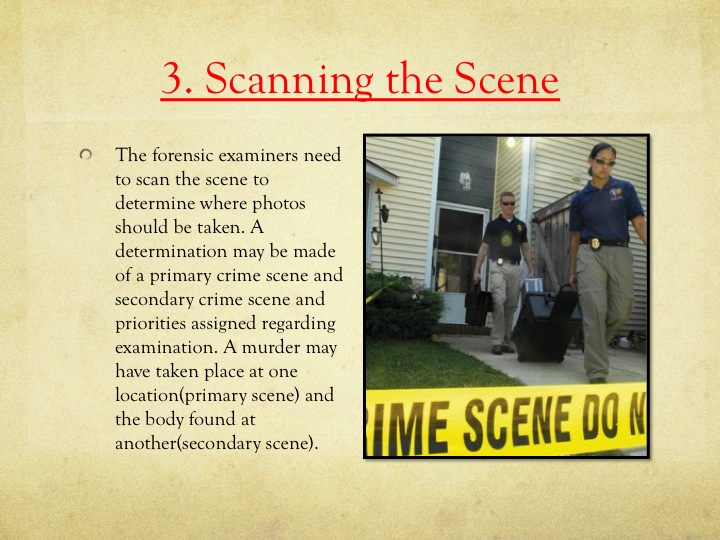
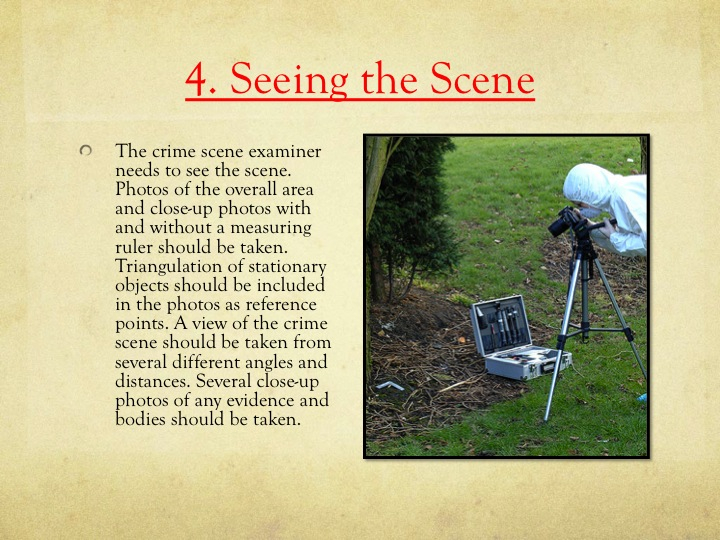
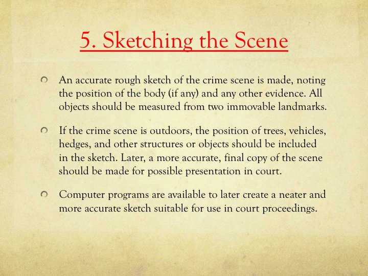
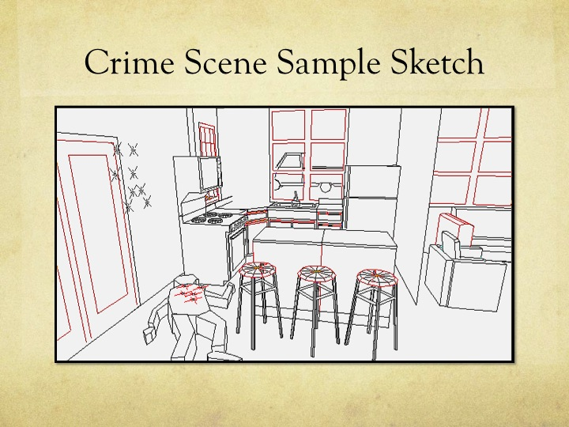
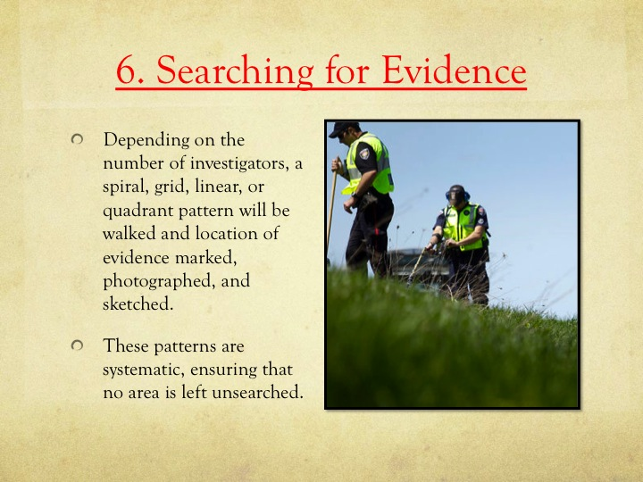
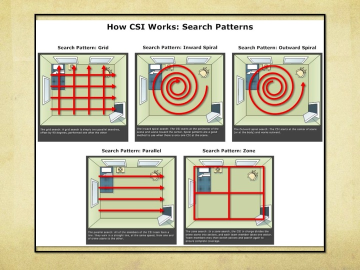
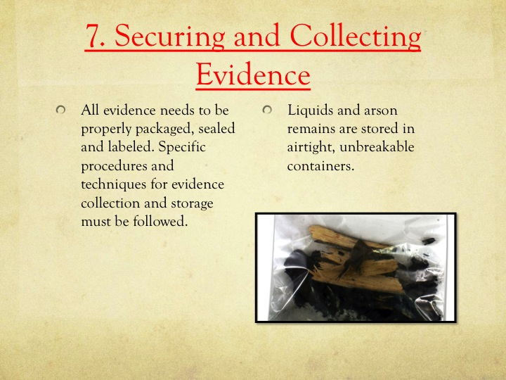
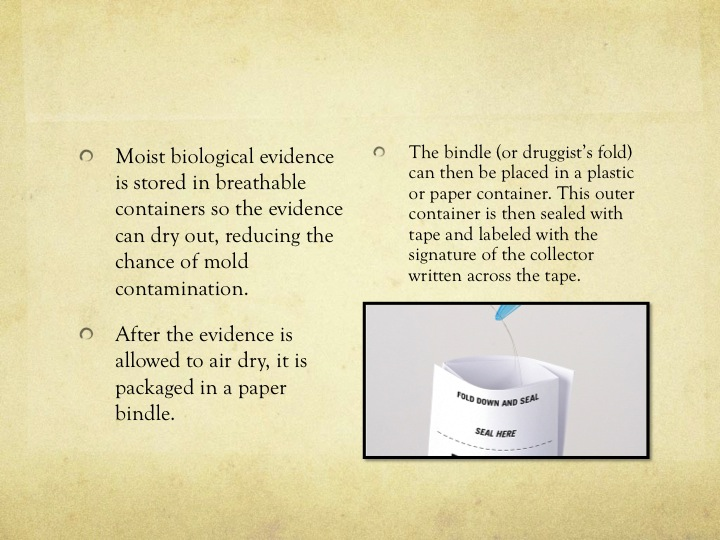
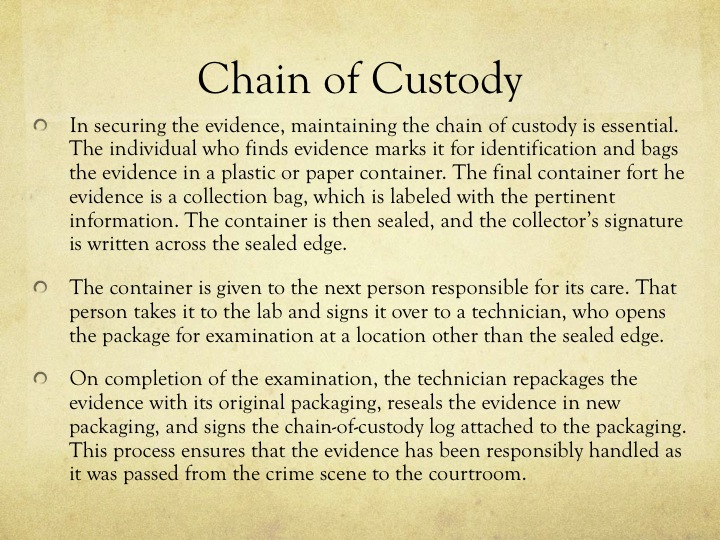
The following article was published in Forensic Magazine. Please read it to gain an understanding of some of the safety precautions that must take place at a crime scene.
When a call comes in, a crime scene officer must be ready to respond, no matter the situation. We all realize that means making sure you always have the proper equipment available to process the scene. But what sometimes gets forgotten is the need to protect your own safety. Depending on the situation, you'll need to protect your head, eyes, lungs, hands, feet, and occasionally your entire body. Even though you won't know exactly what you're getting into until you reach the scene, you still need to arrive at every scene with the right equipment to make sure that you are protected from harm.
When you get to a crime scene, you should first make sure that the scene has been properly secured and protected before you begin to process it. In order to secure the scene, the responding officer must conduct a thorough search to be sure that there are no suspects or physical dangers, such as booby traps, still present. I cannot emphasize enough the importance of a properly secured and protected scene to the safety of the crime scene officers and everyone else.
Once you know the scene is secure and you are ready to begin processing, your first thought is probably to put on latex or nitril gloves. These gloves are, of course, important for protecting evidence because they keep you from leaving your own fingerprints behind. They also offer you protection from blood and other substances at the scene. I always used a pair of latex or nitril gloves as a base layer, then added another pair over these if they were needed when working with different pieces of evidence. It was much easier for me to remove and replace this second layer of gloves than it was to change the first pair. Sometimes you may also need heavy gloves to protect your hands when moving boards or other heavy or dangerous objects. I found that heavy leather gloves or firemen's gloves worked well for these situations. When I needed a heavy pair of gloves, I would just pull those on over the latex or nitril. The latex or nitril gloves underneath the heavy gloves were useful because they provided additional protection against cuts and liquids.
Your footwear is also important. Again, you want to protect the scene, so remember to cover your shoes or boots with rubber booties when you're indoors. Also remember to photograph the shoes of everyone at the scene (including first responders, officers, technicians, etc.) so that you can distinguish their imprints from those of suspects. You should also pay attention to the type of shoe or boot you wear. Since you could be anywhere from an old, dilapidated building to a wet, slippery embankment, you don't want to wear shoes with smooth soles. Instead, you should always wear shoes or boots that provide good traction and ankle support. You may even want to invest in a pair of boots with steel toes and steel plates in the arches. These boots will offer you protection from hazards such as nails and other dangerous objects that you may encounter while working a scene. In addition, you should keep chest waders and rubber boots in your crime scene vehicle for times when you are working in extreme conditions.
An important piece of equipment is a safety helmet. There are a wide variety of helmets available that are both lightweight and easy to store. Be sure to look for one that is OSHA approved so that it will protect you from something falling and also protect you if you hit your head when you're working in a low-clearance area. Even when you're wearing your helmet, remember to be observant of your surroundings as you're working a scene. This is especially important when you're involved in a task such as photographing or videotaping, where it's easy to become so engrossed in what you're doing that you lose sight of your surroundings. That's when you can get yourself into trouble. If possible, it's a good idea to work with a partner so that you have an extra set of eyes scanning the scene for you.
In many situations, you'll also need some sort of eye protection. For instance, if you are at an arson scene, a drug scene, or a scene where chemicals were processed, you'll need to protect your eyes. Depending on the situation, you may use eye glasses, goggles, or a face shield to protect your eyes from chemical splashes, fumes, or something bouncing into your eye.
Some scenes can also be especially dangerous to your respiratory system. Examples of these scenes again include arson scenes and meth labs or similar situations where chemicals were processed. In these situations, you must take the precaution of using a respirator with the proper filters to protect your lungs, since inhaling even small amounts of some chemicals can be lethal.
In other cases, you might have a scene where the air is filled with noxious odors from a decomposing body or other biohazards that makes it hard for you to do your job. In those instances, a mask that filters the air will make your job much easier. There are a wide variety of masks available, including single and double filter masks and battery operated masks that fit into hoods and provide eight hours of fresh air on a single charge. Depending on your needs and your budget (the battery operated model is available for around $1,000); you may want to include a variety of masks in your equipment van.
At the most dangerous scenes, you want to make sure you are completely protected. A good option is a Tyvek® protective suit, which will keep biohazards off your skin. These suits are designed to allow for good range of movement, but also remain strong enough to provide protection from hazards at the scene.
Until you actually arrive at a scene and make your own assessment, you won't know exactly what might be waiting for you. But you can minimize the danger to yourself and to your fellow officers if you spend some time thinking and planning before you ever go out on a call. Then you'll always be prepared to protect both the scene and yourself from harm.
Dick Warrington is in research and development and a crime scene consultant and training instructor for the Lynn Peavey Company.